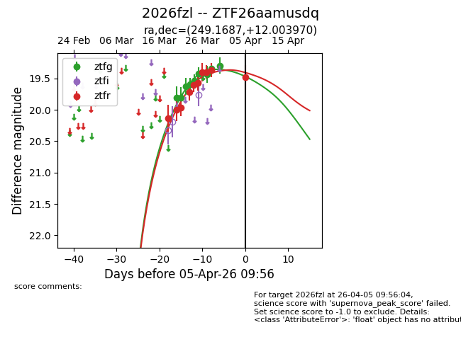
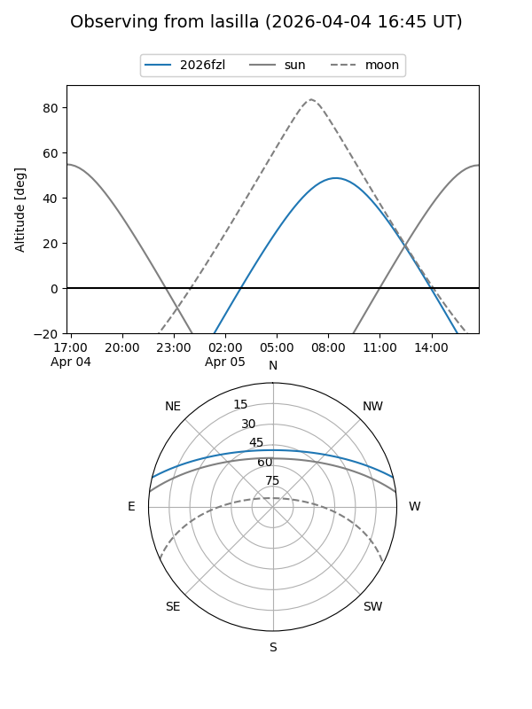
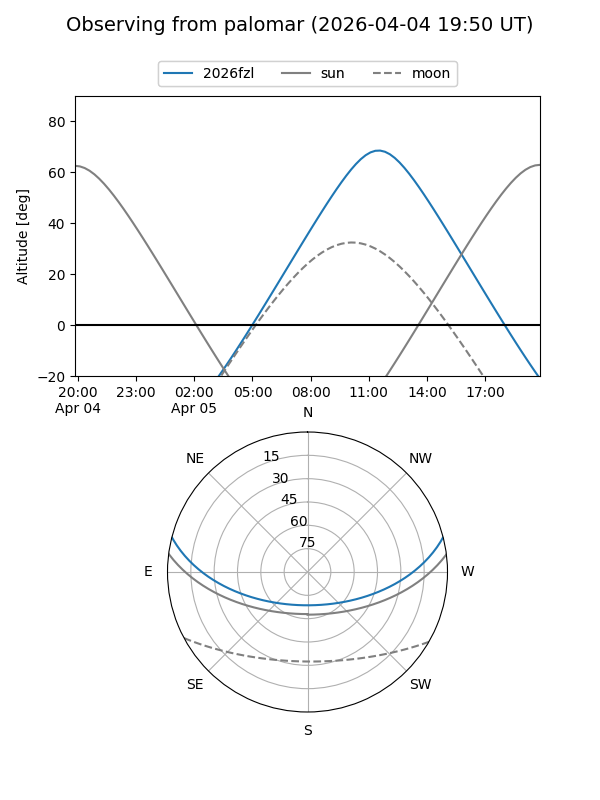
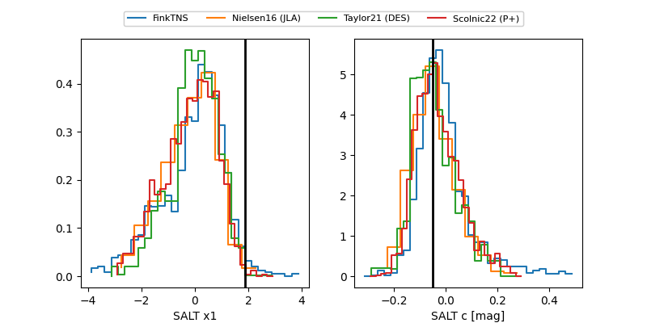

2026fzl
Target 2026fzl at 2026-04-05 09:59
Aliases and brokers:
FINK: link
Lasair: link
ALeRCE: link
TNS: link
YSE: link
alt names
ZTF26aamusdq (ztf,fink_ztf)
2026fzl (tns,yse)
Coordinates:
equatorial (ra, dec) = 249.1687,+12.00397
equatorial (HMS+DMS) = 16:36:40.48,+12:00:14.29
galactic (l, b) = (28.5539,+35.29075)
Flags:
Photometry:
last ztfg=19.29, ztfr=19.48
9 ztfg, 10 ztfr detections
Lightcurve

Visibility


Additional plots
